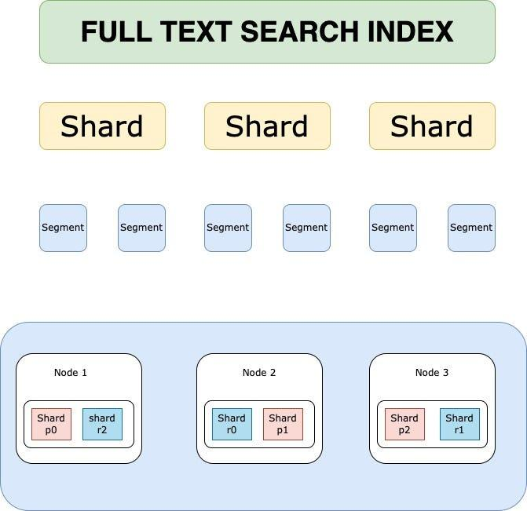

Replication(examples)
Elasticsearch Replication
When comparing MySQL replication to Elasticsearch/OpenSearch replication, the key shift is from "replaying SQL logs" to "replicating operations and building index structures independently."
Unlike MySQL, Elasticsearch does not copy segment files during normal operation. Instead, it replicates indexing operations, and each node builds its own internal index.
1. The Core Concept: Primary and Replica Shards

Source: ChatGPT
In Elasticsearch, an index is split into Shards.
-
Primary Shard (P0): Handles all write operations for that shard.
-
Replica Shards (R0, R1, R2): Receive replicated operations and serve read requests.
2. The Replication Mechanism (How it works)
When a write operation is sent:
-
Primary Shard:
-
Applies the operation (index/update/delete)
-
Writes to in-memory buffer and transaction log (translog)
-
-
Replication:
- The operation (not segment files) is forwarded to Replica Shards
-
Replica Shards:
-
Apply the same operation independently
-
Build their own Lucene segments
-
-
Acknowledgment:
- Depends on configuration (e.g., required active shards)
-
Refresh (Background):
- Makes data searchable (default ~1 second)
Key Insight: Replication is operation-based, not file-copy-based (segment copying only occurs during recovery or rebalancing).
3. Why Replicas?
A. Read Scalability
Queries are distributed across Primary + Replica shards in parallel.
B. High Availability
If a Primary fails:
- A Replica is promoted automatically
C. Search Performance
Replicas improve throughput and reduce query latency.
4. Write Consistency
Elasticsearch uses configurable acknowledgment settings:
-
Default Behavior:
-
Primary must succeed
-
Replicas may also be required depending on
wait_for_active_shards -
Stronger Durability:
-
Wait for one or more replicas before acknowledging
-
Weaker Durability:
-
Acknowledge after primary only (faster, risk of data loss)
There is no strict quorum protocol like Raft; consistency is configurable rather than enforced via majority consensus.
5. Rebalancing
-
New Node Joins: Shards are redistributed automatically.
-
Node Failure:
-
Replica promoted to Primary
-
Missing replicas rebuilt in background
6. OpenSearch Specifics
-
Enhanced self-healing and cluster management
-
Strong open-source ecosystem
-
Kubernetes-native deployments via operators
Tradeoffs/Best practices
1. Know Your Workload (Always First)
- Define:
- Queries/sec, indexing rate, data growth
- Query types (filters vs full-text vs aggregations)
- Expect 2–3 iterations before optimal design
Tradeoff:
- Overestimate → wasted resources
- Underestimate → reindexing + scaling pain
2. Number of Shards
- Each shard = single-threaded query execution
- Parallelism = across shards, not within shard
Guideline:
- Target 20–40 GB per shard (typical sweet spot)
- Avoid:
- Too many tiny shards (<1 GB)
- Too few huge shards (>50–100 GB)
Tradeoffs:
-
More shards
- Higher parallelism
- − More overhead (CPU, memory, scheduling)
-
Fewer shards
-
Lower overhead
- − Reduced parallelism, slower large queries
Rule: Benchmark with real workload.
3. Number of Replicas
- Max replicas ≤ (nodes − 1)
- Default = 1 (good baseline)
Use more replicas when:
- Read-heavy workload
- Small dataset (can fit on each node)
Tradeoffs:
- More replicas
- Higher query throughput
- Better availability
- − More disk + memory usage
- − Higher cluster coordination cost
- Fewer replicas
- Lower cost
- − Reduced fault tolerance and read scaling
4. Number of Nodes
- Minimum:
- 3 master-eligible nodes (avoid split brain)
- Prefer:
- Dedicated master nodes (no data role)
Scaling rule:
- More data → more data nodes
- Keep shard size in target range
Tradeoffs:
-
More nodes
-
- Better distribution, fault tolerance
- − Higher coordination overhead
- Fewer nodes
-
- Simpler cluster
- − Risk of overload, poor resilience
5. Number of Indexes
- Focus on total shard count, not index count
Best practice:
- Prefer fewer, larger indexes
- Avoid many tiny indexes/shards
Tradeoffs:
- Many small indexes
- − High overhead, inefficient
- Fewer consolidated indexes
- Better performance, resource usage
Quick Heuristics (Practical Defaults)
- Shard size: 20–40 GB
- Replicas: 1 (increase for read-heavy)
- Masters: 3 dedicated nodes
- Avoid: too many small shards
- Always: benchmark with real queries
Core Mental Model
- Shards = parallelism unit
- Replicas = read scaling + availability
- Nodes = capacity + fault tolerance
Optimizing a cluster = balancing these three.
Mysql replication
MySQL replication is a powerful mechanism that allows you to copy database changes from a Primary server (formerly called Master) to one or more Replica servers (formerly called Slaves).
Here is a comprehensive overview of what you need to know about how MySQL handles replication, ranging from the basic architecture to modern best practices.
1. The Core Mechanism: Binary Logging
The foundation of replication is the Binary Log (binlog). Think of this as a database journal that records every data change (INSERT, UPDATE, DELETE) in chronological order.
-
How it works: The Primary server records every change in its Binary Log.
-
The Task: The Replica server periodically connects to the Primary and asks, "What changes have you made since the last time we spoke?"
-
Storage: The Primary does not send the actual data; it sends the log entries (events).
2. The Replication Process (IO and SQL Threads)
MySQL uses a "Two-Thread" architecture to ensure replication doesn't slow down writing to the database.
-
The I/O Thread:
-
Runs on the Replica.
-
Connects to the Primary and reads the Binary Log events.
-
Keeps a local copy: It stores these events in a file on the Replica called the Relay Log.
-
It is asynchronous, meaning the Primary does not pause while waiting for the Replica to save the log.
-
-
The SQL Thread:
-
Runs on the Replica.
-
Reads the events from the Relay Log.
-
Executes the SQL: It applies the changes to the Replica's data files just as if a user had typed the commands.
-
3. Types of Replication (Latency vs. Safety)
The most critical decision you make is how "strong" the connection between Primary and Replica is.
-
Asynchronous Replication (Classic):
-
The Primary does not wait for confirmation from the Replica before confirming a transaction to the client.
-
Pros: Lowest latency.
-
Cons: If the Primary crashes before the Replica receives the update, data may be lost.
-
Semi-Synchronous Replication:
-
The Primary waits until at least one Replica has received the log event and synced it to its relay log before acknowledging the transaction.
-
Pros: Reduces probability of data loss.
-
Cons: Does not completely eliminate data loss (e.g., if the acknowledged replica fails before applying the transaction).
-
Group Replication: (Advanced)
-
A distributed replication scheme using certification-based conflict detection.
-
Supports multi-primary setups (multiple nodes can accept writes).
-
Transactions are checked for conflicts before commit, and conflicting transactions may be rolled back.
4. Binlog Formats
MySQL can record changes in three ways. The format on the Primary must match the expectations of the Replica (unless using Mixed mode).
-
Statement-Based (SBR):
-
Records the exact SQL statement (e.g.,
UPDATE users SET age = 20 WHERE id = 1). -
Pros: Logs are smaller; easier to debug.
-
Cons: Non-Deterministic. If a function like
NOW()returns different values on different servers, data will diverge.
-
-
Row-Based (RBR):
-
Records the actual changed data (e.g.,
Row id=1 changes to age=20). -
Pros: Most accurate; works with non-deterministic functions.
-
Cons: Binary logs can be very large.
-
-
Mixed-Based (MBR):
-
MySQL automatically chooses Statement or Row based on the query.
-
Note: This is commonly used in modern deployments.
-
5. Global Transaction Identifiers (GTIDs)
GTIDs are the modern way to manage replication.
-
What is it? Every transaction is assigned a unique ID composed of server ID + sequence number.
-
Advantage: Simplifies failover and replication topology management; eliminates manual tracking of file/position.
-
Note: Helps prevent issues like missing or duplicate transactions ("GTID holes") in complex setups.
6. Common Use Cases
-
Read Scaling (Load Balancing): Distribute read queries to replicas while writes go to the primary. Note that replicas may serve stale reads due to replication lag.
-
Failover: Maintain a standby replica that can be promoted if the Primary fails.
-
Data Archiving: Offload historical or analytical workloads to replicas.
7. Crucial Considerations & Risks
-
Replication Lag: Replicas can fall behind the Primary. This breaks read-after-write consistency.
-
Data Divergence: Manual writes on replicas or inconsistent environments can cause drift.
-
Replication is not Backup: Corrupted or deleted data will replicate as well.
-
Read-Only Mode: Set
read_only = 1on replicas to prevent accidental writes. -
Network Latency: High latency increases lag and can cause backlog buildup.
-
Failover Risks: Improper failover can lead to split-brain scenarios or data inconsistencies.
Summary Table: Replication
| Feature | MySQL Replication | Elasticsearch/OpenSearch Replication |
|---|---|---|
| Mechanism | Binary Log (logical changes) | Operation-based replication |
| The "Writer" | Primary DB | Primary Shard |
| Replication Unit | SQL/row events | Indexing operations |
| Execution Model | Replay logs | Re-execute operations |
| Search Visibility | Immediate | Near real-time (refresh-based) |
| Failure Handling | Manual/managed failover | Automatic promotion |
| Consistency | Eventual (async by default) | Configurable (NRT model) |
Mental Model Shift
MySQL → logical replication (replay intent via logs)
Elasticsearch → operational replication (replay operations, build index independently)